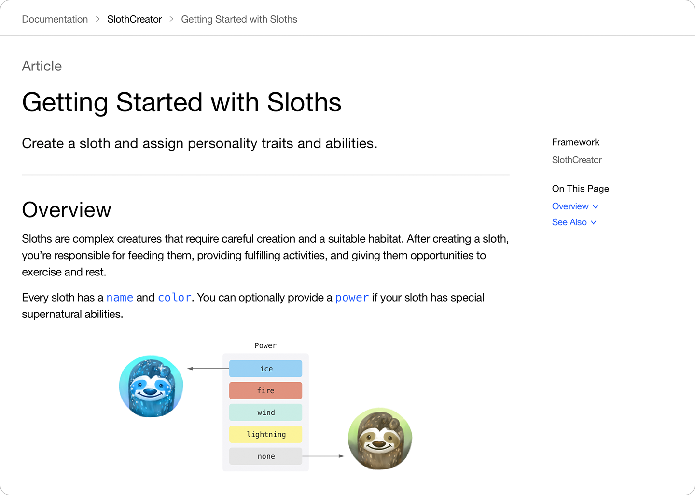

Article
Adding Supplemental Content to a Documentation Catalog
Include articles and extension files to extend your source documentation comments or provide supporting conceptual content.
Overview
A documentation catalog (a directory with a ‘.docc’ extension) contains files that enrich your source documentation comments. Two types of files that documentation catalogs can contain are articles and extension files.
Typically, documentation comments in source code describe how specific APIs work, but often don’t explain how all the pieces in a project fit together at a conceptual level. Adding an article to your documentation catalog is one way to include this conceptual content. Articles are markup files that contain information that doesn’t relate to a specific symbol. Use articles to:
Provide a landing page that includes an overview of your package or framework
Craft a learning path for readers to understand how to use your project, such as with a getting started guide or a tutorial
Extension files are markup files that complement source documentation comments. Use extension files to:
Organize properties and methods that a symbol contains
Provide additional content beyond source documentation comments
Override source documentation comments
For details about adding a landing page and organizing symbols using extension files, see Adding Structure to Your Documentation Pages.
The process of crafting great documentation is an art. Your content is unique; you know which elements, beyond source documentation comments, provide the most value to your readers. For information about adding documentation to your project and creating a documentation catalog, see Documenting a Swift Framework or Package.
Add Articles to Explain Concepts or Describe Tasks
Adding articles to your documentation catalog helps readers understand how the types and methods in your project work as a system. They let you explain how to complete a task, or discuss a broader concept that doesn’t fit into an Overview section for a specific symbol.

The structure of an article is similar to symbol files or a top-level landing page, with the exception that the first level 1 header is regular content instead of a symbol reference. For example, the Getting Started with Sloths article contains the following title, single-sentence abstract or summary, and Overview section:
# Getting Started with Sloths
Create a sloth and assign personality traits and abilities.
## Overview
Sloths are complex creatures that require careful creation and a suitable
habitat.
...
To add an article to your documentation catalog, use a text editor and create a file with an appropriate title and add an .md extension.
After the Overview section, additional sections and subsections use a double hash (##) for a level 2 header, and a triple hash (###) for a level 3 header. Follow the hashes with a space, and then the title for that section or subsection.
When you add an article to a documentation catalog, DocC includes a link to it on the project’s top-level page. To choose a different location for the article, add a link to it from a group or collection. When DocC renders a link to an article, it uses the article’s title for the text of the link. For more information about organizing your project’s documentation, see Adding Structure to Your Documentation Pages.
Add Extension Files to Append to or Override Source Documentation Comments
Although writing documentation comments in source files has many benefits, in some circumstances it makes more sense to separate content from the source files, such as:
When you include thorough code listings or numerous images that increase the size of your documentation and make source files difficult to manage
When your source documentation comments focus on the implementation of your code, and aren’t appropriate for external documentation
To add an extension file to your documentation catalog, create a file within the documentation catalog, then modify the first line of the file to identify the symbol that the file relates to using a symbol link in a level 1 header. For more information on linking to symbols, see Linking to Symbols and Other Content.
DocC ignores file names of documentation extensions; you can choose any file name you would like as long as it uses an .md extension. DocC determines the URL path of source documentation from the symbol’s name, type and parent type among other things.
By default, the extension file’s content adds to the symbol’s existing source documentation comment. You can leave key information in the documentation comment—where it’s available to people reading the source code—and use the extension file for longer documentation, code examples, images, and for organizing you documentation hierarchy. For example, to add a section about the sleeping habits of sloths to the Sloth type, the extension file contains the following:
# ``Sloth``
## Sleeping Habits
Sloths sleep in trees by curling into a ball and hanging by their claws.
If the symbol’s existing source documentation focuses on implementation and isn’t appropriate for external documentation, you can completely replace the documentation comment’s content with the extension file’s content by adding a Documentation directive. For example, to replace the source documentation comments of the Sloth type in SlothCreator, the extension file contains the following:
# ``Sloth``
@Metadata {
@DocumentationExtension(mergeBehavior: override)
}
This overrides the in-source summary.
## Overview
This content overrides in-source content.
For more information on Metadata and other directives, see Metadata.
See Also
Documentation Content
Writing Symbol Documentation in Your Source Files
Add reference documentation to your symbols that explains how to use them.
Linking to Symbols and Other Content
Facilitate navigation between pages using links.
Adding Code Snippets to your Content
Create and include code snippets to illustrate and provide examples of how to use your API.
Documenting API with Different Language Representations
Create documentation for API that’s callable from more than one source language.